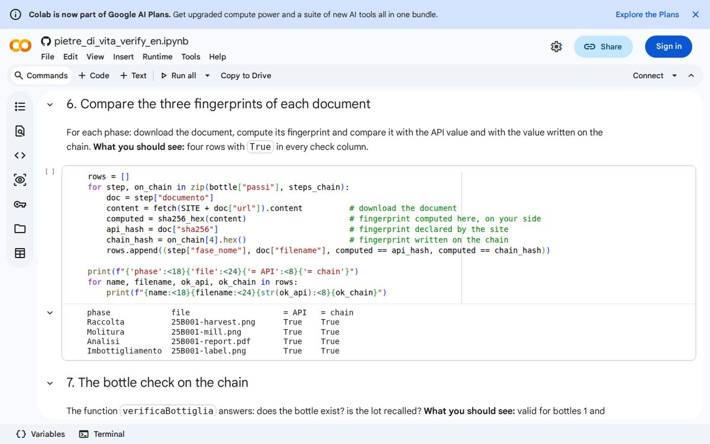

7. Documents outside the chain
A notary does not keep your 40-page contract in the register: they write the number, the date and a seal. If someone changes the contract, the seal no longer matches.
Why not put the PDF on the chain
Writing on the chain costs money and every item stays visible to everyone forever. A PDF or photo is heavy and may contain information we do not want to make public. So we put only the fingerprint on the chain, 32 bytes (type bytes32), while the file lives on the project's server (the backend).
How to compute it
import { createHash } from "node:crypto";
import { readFileSync } from "node:fs";
// 1. The file stays on the server: here we read it as a sequence of bytes.
const bytes = readFileSync("report.txt");
// 2. The SHA-256 fingerprint is 32 bytes: we write it as 64 hexadecimal characters.
const fingerprint = "0x" + createHash("sha256").update(bytes).digest("hex");
console.log(fingerprint); // this bytes32 value goes into the contract as docHashTo try it, create a sample file and save the script above as fingerprint.mjs (the .mjs ending lets Node use import); the documentIsIntact function below goes into the same file. The same script, already complete, is in the starter/scripts/fingerprint.mjs folder of the repository.
echo "Lab report, invented data, acidity 0.2" > report.txt
node fingerprint.mjs0x5c94f9833f90635d7e6979852642be73376ee15c5502d6856961c1d35270d1b6Line by line
- The first two lines take two tools already included in Node.js: one for the fingerprint, one for reading files.
readFileSyncreads the file (here a text file, in the demo a PDF) and turns it into bytes.createHash("sha256")prepares the calculation,updatefeeds it the bytes,digest("hex")returns the result as letters and digits.- We prefix
0xso the contract recognises abytes32value.
The same function is used for verification: anyone who downloads the document can redo the calculation.
// Recheck: the fingerprint of the downloaded file must equal the one on the chain.
function documentIsIntact(fileBytes, hashOnChain) {
const now = "0x" + createHash("sha256").update(fileBytes).digest("hex");
return now === hashOnChain.toLowerCase();
}Line by line
- The function receives the bytes of the downloaded file and the fingerprint read from the chain.
- It recomputes the fingerprint with the same method.
- It returns true only if the two match;
toLowerCase()ignores upper/lower case differences.
In the demo the backend computes the fingerprint when the file arrives (at most 5 MB, PDF, JPG or PNG only), stores the file and writes the fingerprint on the chain as docHash. At verification the public page compares the two fingerprints for each document.
A useful detail: the fingerprint proves the file has not changed since registration, not that its content was true.
Try it now
Repeat the check on a real document of the demo: the notebook downloads the lab report of lot 25B001, computes its fingerprint and compares it with the one written on the chain (sections 6 and 8).
Free, runs in your browser, public data only. Colab asks for a free Google account to run the cells (menu Runtime > Run all).
What you should see
On your computer, with the sample file, sha256sum gives the same value as the script (on Mac: shasum -a 256):
0x5c94f9833f90635d7e6979852642be73376ee15c5502d6856961c1d35270d1b6
5c94f9833f90635d7e6979852642be73376ee15c5502d6856961c1d35270d1b6 report.txtWhat you should see
In the notebook, sections 6 and 8: four documents with True and the copy changed by a single bit that no longer matches:
phase file = API = chain
Raccolta 25B001-harvest.png True True
Molitura 25B001-mill.png True True
Analisi 25B001-report.pdf True True
Imbottigliamento 25B001-label.png True True
original intact? True
modified intact? False
Try it yourself
Change the content of report.txt (for example acidity 0.9), compute its fingerprint with the script above, then change one letter in the file and recompute. Compare the two fingerprints with the documentIsIntact function.
What you learned
- Only the 32-byte fingerprint is written on the chain, not the file.
- The file lives on the backend and anyone can recompute its fingerprint.
- The fingerprint proves the file is unchanged, not that it is true.